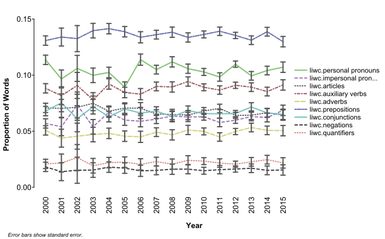
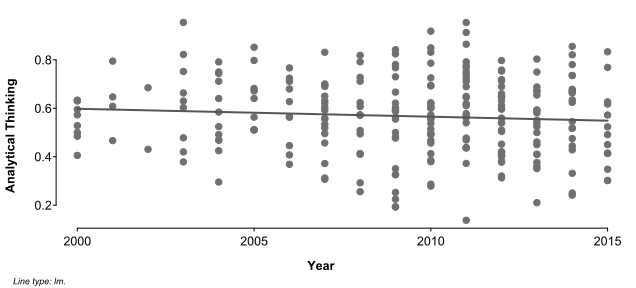

Built with R 4.2.1
This example uses the receptiviti package to take an
initial, exploratory look at a set of texts.
Setup
First, we need to load some example data and the package.
Load Data
We’ll be looking at text from commencement speeches given at various schools between 2000 and 2015, which we’ll load from the tutorial repository:
speeches <- read.csv(paste0(
"https://raw.githubusercontent.com/Receptiviti/",
"api_tutorials_demos/main/data/commencement_speeches.csv"
))
library(knitr)
kable(speeches[1:5, 2:4])| person | location | year |
|---|---|---|
| Guy Kawasaki | Babson College | 2000 |
| Lewis Lapham | St. John’s College | 2003 |
| Margaret Spellings | Montgomery College | 2006 |
| Angela Ahrendts | Ball State University | 2008 |
| Rachel Maddow | Smith College | 2010 |
Load Package
If this is your first time using the package, see the Get Started guide to install it and set up your API credentials.
Process Text
Now we can send our texts to the API to be scored.
For this example, we’ll just look at the Linguistic Inquiry and Word Count (LIWC) framework, along with the standard summary variables:
processed <- receptiviti(
speeches$text_to_score,
frameworks = c("summary", "liwc")
)
kable(processed[1:5, 2:51])| summary.word_count | summary.words_per_sentence | summary.sentence_count | summary.six_plus_words | summary.capitals | summary.emojis | summary.emoticons | summary.hashtags | summary.urls | liwc.analytical_thinking | liwc.clout | liwc.authentic | liwc.emotional_tone | liwc.six_plus_words | liwc.dictionary_words | liwc.function_words | liwc.pronouns | liwc.personal_pronouns | liwc.i | liwc.we | liwc.you | liwc.she_he | liwc.they | liwc.impersonal_pronouns | liwc.articles | liwc.prepositions | liwc.auxiliary_verbs | liwc.adverbs | liwc.conjunctions | liwc.negations | liwc.other_grammar | liwc.verbs | liwc.adjectives | liwc.comparisons | liwc.interrogatives | liwc.numbers | liwc.quantifiers | liwc.affective_processes | liwc.positive_emotion_words | liwc.negative_emotion_words | liwc.anxiety_words | liwc.anger_words | liwc.sad_words | liwc.social_processes | liwc.family | liwc.friends | liwc.female | liwc.male | liwc.cognitive_processes | liwc.insight |
|---|---|---|---|---|---|---|---|---|---|---|---|---|---|---|---|---|---|---|---|---|---|---|---|---|---|---|---|---|---|---|---|---|---|---|---|---|---|---|---|---|---|---|---|---|---|---|---|---|---|
| 2159 | 11.48404 | 188 | 0.2440945 | 0.0271289 | 0 | 0 | 0.0092635 | 0 | 0.4845305 | 0.7593843 | 0.4557364 | 0.8563083 | 0.2440945 | 0.9198703 | 0.5215377 | 0.1584067 | 0.1106994 | 0.0407596 | 0.0009264 | 0.0523390 | 0.0101899 | 0.0064845 | 0.0477073 | 0.0620658 | 0.1171839 | 0.0940250 | 0.0467809 | 0.0713293 | 0.0236220 | 0.2867068 | 0.1746179 | 0.0574340 | 0.0338119 | 0.0152849 | 0.0273275 | 0.0185271 | 0.0694766 | 0.0518759 | 0.0176007 | 0.0013895 | 0.0050950 | 0.0027791 | 0.1162575 | 0.0115794 | 0.0050950 | 0.0088004 | 0.0050950 | 0.1306160 | 0.0305697 |
| 3688 | 35.80583 | 103 | 0.2817245 | 0.0220627 | 0 | 0 | 0.0000000 | 0 | 0.9546208 | 0.6347539 | 0.2913835 | 0.3373133 | 0.2817245 | 0.8256508 | 0.5168113 | 0.0995119 | 0.0515184 | 0.0130152 | 0.0065076 | 0.0073210 | 0.0159978 | 0.0086768 | 0.0479935 | 0.1117137 | 0.1784165 | 0.0436551 | 0.0314534 | 0.0721258 | 0.0157267 | 0.2001085 | 0.0970716 | 0.0569414 | 0.0333514 | 0.0154555 | 0.0173536 | 0.0184382 | 0.0490781 | 0.0265727 | 0.0219631 | 0.0043384 | 0.0048807 | 0.0048807 | 0.0840564 | 0.0002711 | 0.0002711 | 0.0018980 | 0.0184382 | 0.1111714 | 0.0292842 |
| 2076 | 15.26471 | 136 | 0.2456647 | 0.0315047 | 0 | 0 | 0.0000000 | 0 | 0.5628012 | 0.8347563 | 0.5607432 | 0.7796976 | 0.2456647 | 0.9123314 | 0.5183044 | 0.1599229 | 0.1218690 | 0.0467245 | 0.0077071 | 0.0491329 | 0.0134875 | 0.0048170 | 0.0380539 | 0.0534682 | 0.1377649 | 0.0900771 | 0.0472062 | 0.0650289 | 0.0163776 | 0.2721580 | 0.1734104 | 0.0452794 | 0.0274566 | 0.0168593 | 0.0158960 | 0.0240848 | 0.0419075 | 0.0346821 | 0.0062620 | 0.0014451 | 0.0019268 | 0.0009634 | 0.1286127 | 0.0081888 | 0.0009634 | 0.0183044 | 0.0028902 | 0.1156069 | 0.0250482 |
| 3463 | 20.49112 | 169 | 0.2723072 | 0.0261630 | 0 | 0 | 0.0000000 | 0 | 0.5717216 | 0.8650195 | 0.5851801 | 0.9029114 | 0.2723072 | 0.8925787 | 0.5163153 | 0.1657522 | 0.1169506 | 0.0427375 | 0.0112619 | 0.0502455 | 0.0028877 | 0.0098181 | 0.0488016 | 0.0603523 | 0.1224372 | 0.0794109 | 0.0410049 | 0.0698816 | 0.0109731 | 0.2492059 | 0.1518914 | 0.0563096 | 0.0265666 | 0.0153046 | 0.0135720 | 0.0190586 | 0.0615074 | 0.0502455 | 0.0112619 | 0.0043315 | 0.0020214 | 0.0014438 | 0.1273462 | 0.0051978 | 0.0011551 | 0.0040427 | 0.0046203 | 0.1123303 | 0.0358071 |
| 2487 | 21.81579 | 114 | 0.2830720 | 0.0213356 | 0 | 0 | 0.0000000 | 0 | 0.7257801 | 0.8530584 | 0.1537049 | 0.6312010 | 0.2830720 | 0.8809811 | 0.5166868 | 0.1391234 | 0.0755931 | 0.0072376 | 0.0044230 | 0.0353840 | 0.0205066 | 0.0080418 | 0.0635304 | 0.0776035 | 0.1375151 | 0.0836349 | 0.0470446 | 0.0619220 | 0.0088460 | 0.2517089 | 0.1572175 | 0.0478488 | 0.0213108 | 0.0140732 | 0.0160836 | 0.0172899 | 0.0607157 | 0.0377965 | 0.0180941 | 0.0024125 | 0.0076397 | 0.0036188 | 0.1093687 | 0.0036188 | 0.0016084 | 0.0176920 | 0.0064335 | 0.1009248 | 0.0237234 |
All of the frameworks are returned from the API and stored in your cache, so you can request different frameworks for the same texts without reprocessing them.
This returns a data.frame that is aligned with your
original input, so you can add it to the original data:
speeches <- cbind(speeches, processed)Analyze Scores
One question we might ask is how speech styles have changed over time. To get at this, we might look for trends in language style categories:
# identify the language style categories
style_columns <- paste0("liwc.", c(
"personal_pronouns", "impersonal_pronouns", "articles", "auxiliary_verbs",
"adverbs", "prepositions", "conjunctions", "negations", "quantifiers"
))
# calculate Pearson's r between each category and the year
style_trends <- cor(speeches[, style_columns], speeches$year)[, 1]
kable(data.frame(
"Correlation with Year" = style_trends, check.names = FALSE
))| Correlation with Year | |
|---|---|
| liwc.personal_pronouns | -0.0033174 |
| liwc.impersonal_pronouns | 0.0886129 |
| liwc.articles | -0.1472753 |
| liwc.auxiliary_verbs | 0.0647079 |
| liwc.adverbs | 0.1164321 |
| liwc.prepositions | -0.0502796 |
| liwc.conjunctions | -0.0410184 |
| liwc.negations | -0.0401881 |
| liwc.quantifiers | 0.0750854 |
library(splot)
splot(
speeches[, style_columns] ~ as.character(year), speeches,
title = FALSE, laby = "Proportion of Words", labx = "Year",
xlas = 2, mar = c(3, 3, 0, 0), prat = c(1, .3)
)
There are no extreme trends, but there seems to be some general decrease in the use of articles, and increase in the use of adverbs.
These categories are sometimes associate with more narrative or dynamic, less analytic styles, though the trend is weaker in the analytical thinking composite:
splot(
liwc.analytical_thinking ~ year, speeches,
model = TRUE, title = FALSE, laby = "Analytical Thinking", labx = "Year"
)
#>
#> Call:
#> liwc.analytical_thinking ~ year
#>
#> Residuals:
#> Min 1Q Median 3Q Max
#> -0.42430 -0.11471 0.00029 0.11643 0.39212
#>
#> Coefficients:
#> Estimate Std. Error t value Pr(>|t|)
#> (Intercept) 7.162326 5.386114 1.330 0.185
#> year -0.003282 0.002681 -1.224 0.222
#>
#> Residual standard error: 0.1612 on 245 degrees of freedom
#> Multiple R-squared: 0.006082, Adjusted R-squared: 0.002025
#> F-statistic: 1.499 on 1 and 245 DF, p-value: 0.222
We’ll leave it there for this example, but if changes over time were of particular interest, we could look for trends in the full set of categories, or identify and analyze categories based on theory.
Language Style Matching
Another thing we might look at in the language style categories is language style matching (LSM), which is a measure of similarity based on these categories.
One thing we might do with this measure is identify stylistically unusual speeches:
# see how much each speech matches the average of all speeches
## LIWC function word categories are automatically used if detected
library(lingmatch)
lsm_baseline <- lingmatch(speeches, mean, type = "lsm")
# which are the most stylistically unusual speeches?
most_unusual <- order(lsm_baseline$sim)[1:10]
kable(cbind(
speeches[most_unusual, 2:4],
LSM_Baseline = lsm_baseline$sim[most_unusual]
), digits = 3, row.names = FALSE)| person | location | year | LSM_Baseline |
|---|---|---|---|
| Gary Malkowski | Gallaudet University | 2011 | 0.746 |
| Makoto Fujimura | Belhaven University | 2011 | 0.815 |
| Lewis Lapham | St. John’s College | 2003 | 0.829 |
| Janet Napolitano | Northeastern University | 2014 | 0.848 |
| Rev. Joseph L. Levesque | Niagara University | 2007 | 0.851 |
| Martha Nussbaum | Connecticut College | 2009 | 0.859 |
| Stephen R. Kellert | University of Western Sydney, Australia | 2013 | 0.860 |
| Whoopi Goldberg | Savannah College of Art and Design | 2011 | 0.860 |
| Jeffrey Sachs | Connecticut College | 2010 | 0.860 |
| Wade Davis | Colorado College | 2010 | 0.865 |
# what makes these speeches unusual?
## calculate differences from the average for each category
category_difference <- sweep(
lsm_baseline$processed[most_unusual, ], 2, lsm_baseline$comp, "-"
)
kable(data.frame(
"Mean Difference" = colMeans(category_difference), check.names = FALSE
), digits = 3)| Mean Difference | |
|---|---|
| ppron | -0.028 |
| ipron | -0.007 |
| article | 0.018 |
| adverb | -0.013 |
| conj | -0.002 |
| prep | 0.015 |
| auxverb | -0.013 |
| negate | -0.005 |
| quant | -0.002 |
# these speeches seem to generally use
# fewer personal pronouns and more articles in particular
kable(cbind(
speeches[most_unusual, 2:4],
category_difference[, order(-abs(colMeans(category_difference)))[1:2]]
), digits = 3, row.names = FALSE)| person | location | year | ppron | article |
|---|---|---|---|---|
| Gary Malkowski | Gallaudet University | 2011 | -0.065 | 0.007 |
| Makoto Fujimura | Belhaven University | 2011 | -0.045 | 0.042 |
| Lewis Lapham | St. John’s College | 2003 | -0.053 | 0.045 |
| Janet Napolitano | Northeastern University | 2014 | -0.015 | 0.034 |
| Rev. Joseph L. Levesque | Niagara University | 2007 | 0.028 | -0.005 |
| Martha Nussbaum | Connecticut College | 2009 | -0.053 | 0.008 |
| Stephen R. Kellert | University of Western Sydney, Australia | 2013 | -0.040 | 0.005 |
| Whoopi Goldberg | Savannah College of Art and Design | 2011 | 0.043 | -0.022 |
| Jeffrey Sachs | Connecticut College | 2010 | -0.033 | 0.023 |
| Wade Davis | Colorado College | 2010 | -0.044 | 0.040 |
Another thing we could look at is stylistic similarity between speeches:
lsm_pairwise <- lingmatch(speeches, type = "lsm", symmetrical = TRUE)
# which speeches are most stylistically similar?
## set self-matches to 0
diag(lsm_pairwise$sim) <- 0
## identify the closest match to each speech
speeches$match <- max.col(lsm_pairwise$sim)
best_match <- diag(lsm_pairwise$sim[, speeches$match])
## look at the top matches
top_matches <- order(-best_match)[1:20]
top_matches <- data.frame(a = top_matches, b = speeches[top_matches, "match"])
top_matches <- top_matches[!duplicated(apply(
top_matches, 1, function(pair) paste(sort(pair), collapse = "")
)), ]
kable(data.frame(
speeches[top_matches$a, 2:4],
Similarity = best_match[top_matches$a],
speeches[top_matches$b, 2:4],
check.names = FALSE
), digits = 3, row.names = FALSE)| person | location | year | Similarity | person | location | year |
|---|---|---|---|---|---|---|
| Neil deGrasse Tyson | University of Massachusetts, Amherst | 2015 | 1.000 | Neil deGrasse Tyson | University of Massachusetts Amherst | 2015 |
| J.K. Rowling | Harvard University | 2008 | 1.000 | JK Rowling | Harvard University | 2008 |
| Cynthia Enloe | Connecticut College | 2011 | 0.999 | Howard Gordon | Connecticut College | 2013 |
| Ellen DeGeneres | Tulane University | 2009 | 0.997 | Ellen Degeneres | Tulane University | 2009 |
| Jonathon Youshaei | Deerfield High School | 2009 | 0.984 | Benjamin Carson Jr. | Niagara University | 2003 |
| Sheryl Sandberg | City Colleges of Chicago | 2014 | 0.981 | John Legend | University of Pennsylvania | 2014 |
| Amy Poehler | Harvard University | 2011 | 0.978 | Sheryl Sandberg | City Colleges of Chicago | 2014 |
| Drew Houston | Massachusetts Institute of Technology | 2013 | 0.976 | Melissa Harris-Perry | Wellesley College | 2012 |
| Mindy Kaling | Harvard Law School | 2014 | 0.975 | Stephen Colbert | Wake Forest University | 2015 |
| Arianna Huffington | Vassar College | 2015 | 0.975 | Tim Cook | Auburn University | 2010 |
| Elias A. Zerhouni | Massachusetts Institute of Technology | 2004 | 0.974 | Benjamin Carson Jr. | Niagara University | 2003 |
The most obvious thing this flags is duplicated texts that aren’t strictly identical.
None of our texts are exactly identical:
anyDuplicated(speeches$text_to_score)
#> [1] 0And no entries are duplicated based on a name-location-year ID:
anyDuplicated(do.call(paste, speeches[, c("person", "location", "year")]))
#> [1] 0But from LSM we can see that at least a few of the most similar speech pairs are actually identical.
The third most similar set is not so obvious since they are apparently by different speakers at different times, so we might take a look at the actual texts:
kable(as.data.frame(vapply(
speeches[as.numeric(top_matches[3, ]), c(2:4, 1)],
substr, character(2), 1, 99
)))| person | location | year | text_to_score |
|---|---|---|---|
| Cynthia Enloe | Connecticut College | 2011 | I am deeply honored to be here with you all. I bring you special greetings from the Class of 1960. |
| Howard Gordon | Connecticut College | 2013 | I am deeply honored to be here with you all. I bring you special greetings from the Class of 1960. |
This is probably just an issue with the data, but maybe these people gave the same speech.